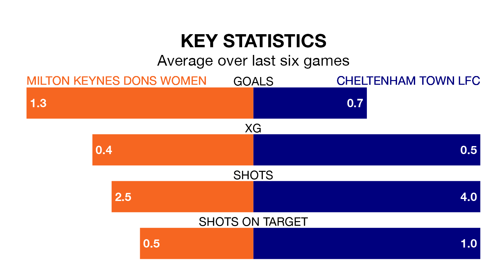

Milton Keynes Dons Women host Cheltenham Town LFC on Sunday in Women's National League Premier Division South.
In their last league match, on January 7, Milton Keynes Dons lost to C and K Basildon 3-2 at home.
Cheltenham Town also lost, 3-2 at home against Plymouth Argyle Women on January 21.
With 16 goals in 13 games so far this season, Cheltenham Town are the league's third-lowest scorers with 1.2 goals per game. And they are conceding more than average, letting in 34 goals at a rate of 2.6 per game.
Milton Keynes Dons are also below average scorers, with 1.7 goals per game, compared to a league average of 1.9. They have conceded 1.4 goals per game.
The home side are in mixed form in Women's National League Premier Division South, with three wins and a draw from their last six games.
With two wins and a draw over that period, the visitors' form is worse – they have taken seven points from 18, compared to Milton Keynes Dons' 10.
In the last three years, Milton Keynes Dons and Cheltenham Town have played each other on three occasions. They won one each, and they drew once.
Their last meeting was on September 17, when Cheltenham Town won 4-3 at home.
Milton Keynes Dons are sixth in the table after 11 games, of which they have won five and drawn two, earning 17 points.
Cheltenham Town are one place behind the hosts in seventh, with four wins and two draws putting them on 14 points.
Updated: 09:07 (UTC), 24/01/24